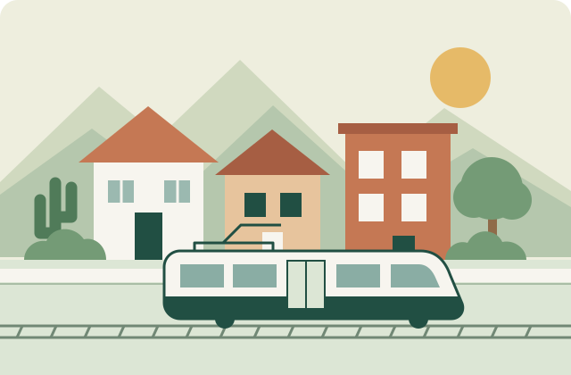

Feel at home in Tempe and Phoenix
Practical guides for international students and travelers settling into everyday life in the United States.

Explore essential guides
Everyday Life
Find tips for shopping, checking receipts, and everyday purchases.
Your first week
- Find groceries and a pharmacy.
- Plan a route to campus or your stay.
- Review phone and banking questions.
Need support?
Find official student resources or contact ASU's International Students and Scholars Center for help settling in.